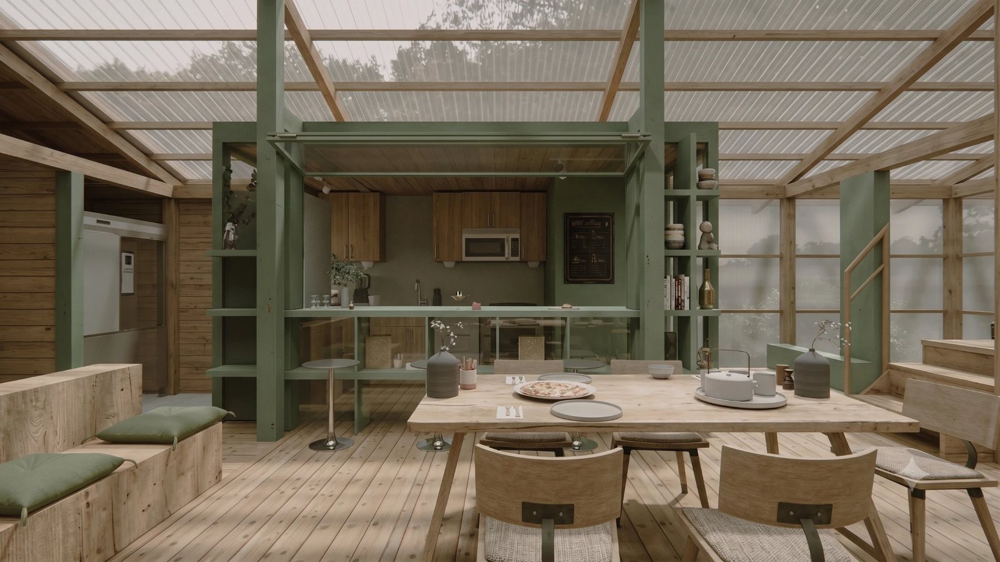
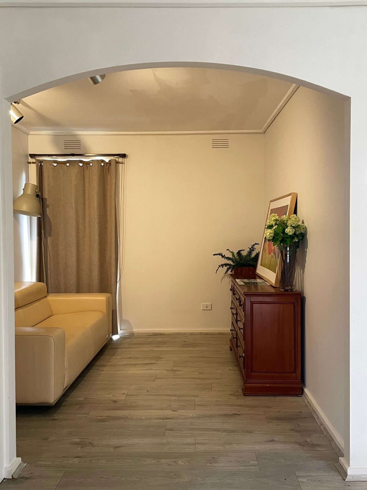

Space, product, and everything drawn between them
Pop-ups, retail interiors, furniture, and digital objects — every project below started as a question about what a space or object needed to do.
Nordfolk
A pop-up retail environment, three-week installThree weeks on site, a wooded backdrop instead of a storefront, and a brief to make a temporary retail space feel like part of the landscape rather than dropped into it. We built the whole install around timber framing and corrugated roofing that echoes the site's own outbuildings, with furniture and fixtures light enough to strike in a day. The result reads as considered rather than provisional: a pop-up that doesn't announce itself as one.

Mono Studio
Flagship store design and signage systemA single flagship space designed to carry the brand's full range without a single point-of-sale fixture in sight — circulation, lighting, and a wayfinding system built from the same material palette as the product itself. We treated the signage as furniture: cut from the same materials, finished the same way, meant to be lived with rather than noticed. The store reads like a considered room, not a retail set.
